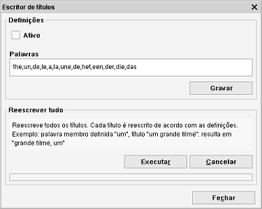

Reescrever título
Caminho de menu: Ferramentas > Reescrever título
Esta ferramenta permite ao Data Crow reescrever títulos de novos itens e/ou reescrever todos os títulos de todos os itens no módulo.

Reescrever títulos é preferível para ordenar e gerar relatórios. Artigos podem ser movidos para o final, transformando
título como "A coisa" ou "A luz", em "coisa, A" e "luz, A".
Ativo
Marque a caixa para reescrever títulos de novos itens (e ao atualizar títulos existentes). Desative esta funcionalidade desmarcando
a caixa (predefinição).
Palavras
Defina as palavras aqui. Um título começado por uma das palavras introduzidas (separadas por um espaço) será reescrito:
"A coisa" em "coisa, A".
Pode definir múltiplas palavras. Separe cada palavra por uma vírgula (,).
Reescrever todos os títulos
Reescreve todos os títulos de todos os itens no módulo